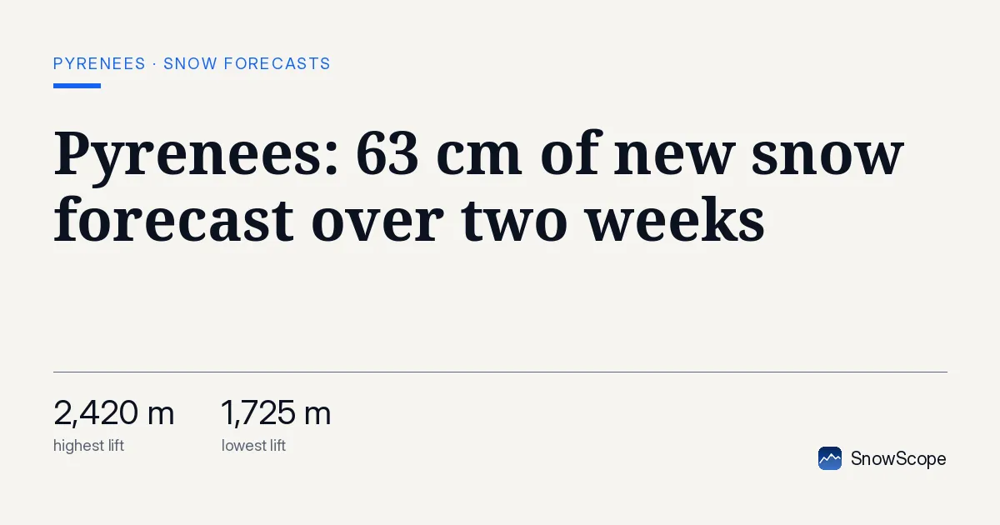
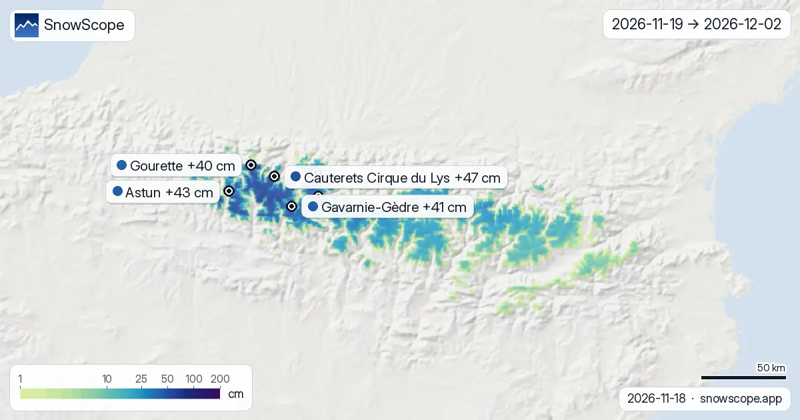

Pyrenees: 63 cm of new snow forecast over two weeks
Up to 63 cm of new snow will fall across the Pyrenees over the next two weeks, with the bulk arriving in the first seven days. The snow is concentrated above 2000 m, where the mountains will build meaningful cover through early December.
See the live snow forecast for Cauterets Cirque du Lys in the SnowScope appSnow depth, powder alerts and the 3D map, free.
Two pulses of snow: first week is the main event
The outlook shows two separate snow events. The first week (19–25 November) will account for about 70% of all new snow, dominated by two active days: Thursday 21 November and Saturday 22 November. On the 21st, 14 resorts across the range are forecast to pick up 5 cm or more, with Gavarnie-Gèdre reaching 12 cm. The 22nd will be even more productive: 20 resorts should see snow, and Gourette may gain 17 cm while Cauterets Cirque du Lys receives 14 cm.
Week two (26 November to 2 December) will be much quieter. A secondary system around 26 November will give scattered resorts 5 to 8 cm, then dry weather takes over until early December. The two-week rhythm favours skiers who can be on the hill during week one.
| Resort | Snow depth | New snow, 72 h | Coming, next days | Top |
|---|---|---|---|---|
| Cauterets Cirque du Lys | 3 cm | 1 cm | 10 cm | 2,420 m |
| Astun | 0 cm | 0 cm | 6 cm | 2,272 m |
| Gavarnie-Gèdre | 1 cm | 0 cm | 6 cm | 2,283 m |
| Gourette | 3 cm | 1 cm | 8 cm | 2,453 m |
| Piau-Engaly | 9 cm | 6 cm | 12 cm | 2,527 m |
| Grand Tourmalet | 1 cm | 1 cm | 7 cm | 2,464 m |

Height decides who gets snow
Altitude is the strongest factor in this forecast. Above 2500 m, the median new-snow total over 14 days is 24 cm, with some slopes reaching 35 cm. Between 2000 and 2500 m, expect 19 to 28 cm. The transition is sharp: between 1500 and 2000 m, only 2 to 6 cm is forecast, and below 1500 m, almost nothing.
Across all the mountain terrain in the region, about 2300 km² should accumulate 20 cm or more. Only 275 km² will reach 50 cm or more—mostly the highest ridges and cirques. Early-season snow is fragile on thin base and exposed rock, so consult the official avalanche bulletin if you venture off-piste.

Which resorts lead the forecast
Cauterets Cirque du Lys tops the two-week total at 47 cm, with its heaviest day on 22 November (14 cm). Gourette ranks close behind with 40 cm, but its single-day maximum is higher—17 cm on the 22nd. Astun and Gavarnie-Gèdre both sit around 41–43 cm total, with Gavarnie-Gèdre showing its strongest burst on the 21st (12 cm). Piau-Engaly, already the deepest today at 9 cm, will add 37 cm and peaks on 21 November with 10 cm.
These forecasts cover the mid-mountain slopes at each resort, not the valley floors. Early snow sits on thin, unconsolidated ground where rocks can be close to the surface.

How the region changes by late November
Today, 18 November, only 460 km² of the Pyrenees is snow-covered, and just 16 of 53 resorts hold measurable snow. The forecast shows a strong recovery. By 21 November, the snow-covered area should reach around 750 km², and roughly 20 resorts will show snow by the end of November.
This rebound is built on height: the high terrain above 2000 m will fill in steadily, while lower elevations remain thin. North-facing slopes at mid-mountain will offer the best stability and deepest base after each storm pulse.
What to watch and when
Thursday 21 November and Saturday 22 November are the two critical days. Combined, most resorts will gain 10 to 25 cm across those two dates, with the biggest single day on the 22nd. If you can ski either of these days or immediately after, you will find the best early-season conditions.
After 25 November, snow-fall drops sharply. The 26 November event is minor; then it stays dry through most of early December. Week two is a holding pattern rather than a building period.
Tips for skiers
- Target 21 and 22 November for the deepest fresh snow. Most of the region's two-week total arrives in those two days or the period immediately after.
- Stick to slopes above 2000 m: the forecast shows little accumulation below that height, and rocky terrain may be exposed after thin early-season snow.
- Prioritise north-facing aspects above 2000 m, where the base is deepest and snow stability is highest on thin cover.
- Check the official avalanche bulletin if you plan off-piste travel; early-season snow on unconsolidated ground is unstable.
- Weather forecasts shift. Return to this post as 21 November approaches for the latest update.
About these numbers
Resort snow depths are the deepest snow on the resort's upper slopes on the date shown; they are estimates for an area, not a measurement at one point. Forecasts can change. Always read the official avalanche bulletin before going off-piste.
Official avalanche bulletins: Météo-France / Meteocat / AEMET
Cite this report
For research, teaching or the press: the numbers and charts are free to reuse under CC BY 4.0 with this citation.
SnowScope (2026), Pyrenees: 63 cm of new snow forecast over two weeks, https://snowscope.app/blog/en/2026/11/pyrenees-2-week-snow-forecast-maps-18-november-2026.html, accessed 2026-11-18
SnowScope (Atlas Labs). (2026, November 18). Pyrenees: 63 cm of new snow forecast over two weeks. SnowScope snow reports. https://snowscope.app/blog/en/2026/11/pyrenees-2-week-snow-forecast-maps-18-november-2026.html
BibTeX
@misc{snowscope2026pyrenees2weeksnowforecas,
author = {{SnowScope (Atlas Labs)}},
title = {Pyrenees: 63 cm of new snow forecast over two weeks},
year = {2026},
month = nov,
howpublished = {\url{https://snowscope.app/blog/en/2026/11/pyrenees-2-week-snow-forecast-maps-18-november-2026.html}},
note = {Published 2026-11-18 12:17 UTC; accessed 2026-11-18}
}· CC BY 4.0 · Methods, data and tools →
Cauterets Cirque du Lys: snow and temperature by height, this winter vs last (tools) →
Follow Cauterets Cirque du Lys
Free: a message when fresh snow is coming, and the forecast every morning.
More snow reports

Cauterets Cirque du Lys leads the Pyrenees with 24 cm at the top on 22 November. Heavy snow forecast for 25 November will push coverage from 44 to 51 resorts.

Gourette and Cauterets side by side: heights, usual snow by month, the best weeks and how to get there, from 46 past winters.

For a low-cost December family ski week at Astún-Candanchú, aim for late December when top slopes hold good snow in 67 % of past winters.